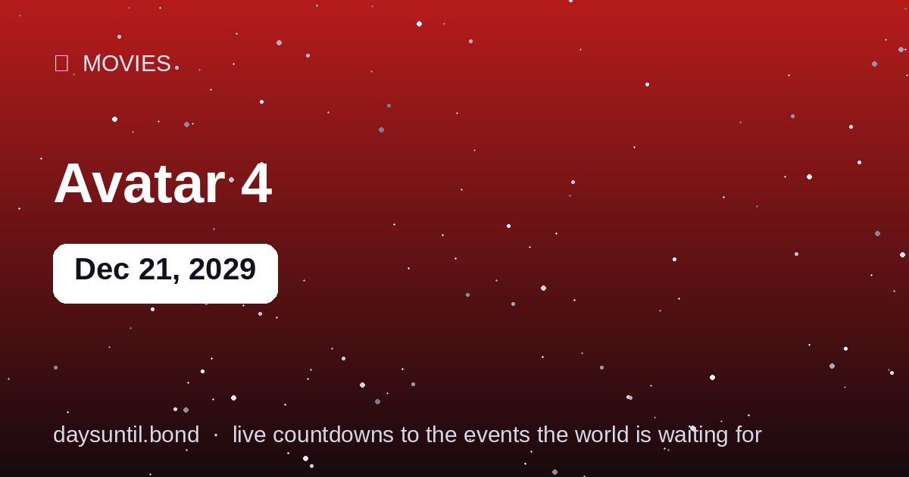

How Many Days Until Avatar 4?
Avatar 4 falls on Friday, December 21, 2029.
As of November 21, 2026: 1126 days to go — 160 weeks and 6 days, 805 weekdays (321 weekend days), about 27,024 hours.

Quick facts
| Date | Friday, December 21, 2029 |
|---|---|
| Days away | Live counter above |
About Avatar 4
James Cameron's next chapter of Pandora, currently scheduled for December 21, 2029 — because Cameron plans in decades, not release windows.
The longest-range countdown on this site. The live counter above runs to the release/event date worldwide (local time zones may shift availability by hours).
Your Avatar 4 countdown milestones
It is easier to plan against fixed points than against a number that moves. These are the dates on which the countdown to Avatar 4 passes each marker between now and the day itself — the last one falls on Thursday 20 December, when there will be 1 day left.
| Milestone | Day | Date | Remaining |
|---|---|---|---|
| 365 days | Thursday | 21 December 2028 | 365 days to go |
| 200 days | Monday | 04 June 2029 | 200 days to go |
| 100 days | Wednesday | 12 September 2029 | 100 days to go |
| 50 days | Thursday | 01 November 2029 | 50 days to go |
| 30 days | Wednesday | 21 November 2029 | 30 days to go |
| 14 days | Friday | 07 December 2029 | 14 days to go |
| 7 days | Friday | 14 December 2029 | 7 days to go |
| 3 days | Tuesday | 18 December 2029 | 3 days to go |
| 1 days | Thursday | 20 December 2029 | 1 day to go |
How the remaining time breaks down
1126 days is the headline, but it is rarely the number that helps. 805 of those are weekdays and 321 fall on a weekend, which is the split that matters if you are planning around work. It is 160 weeks and 6 days, or roughly 37.0 months, or about 27,024 hours.
| Unit | Until Avatar 4 |
|---|---|
| Days | 1126 |
| Weeks | 160 weeks and 6 days |
| Months (approx) | 37.0 |
| Weekdays | 805 |
| Weekend days | 321 |
| Hours | 27,024 |
| Sleeps | 1126 |
Working days are Monday to Friday and do not subtract public holidays, which vary by country and employer — the full month-by-month split is on our weekday page for Avatar 4.